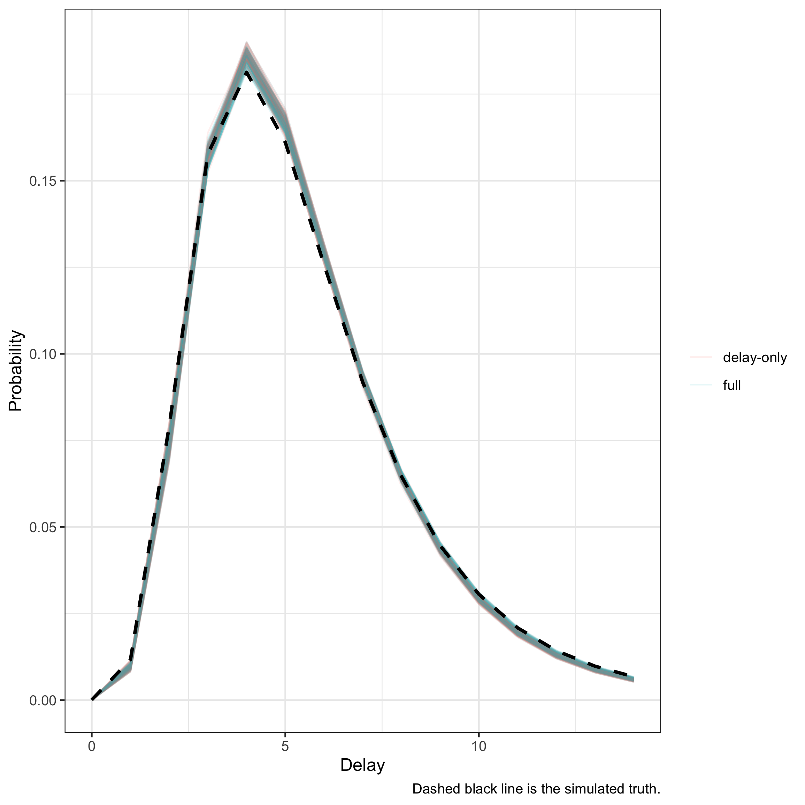

Estimating reporting delays with the full and delay-only models
Epinowcast Team
Source:vignettes/delay-estimation.Rmd
delay-estimation.RmdIn this case study we estimate a reporting delay distribution two ways and compare them.
The first is the full epinowcast nowcasting model, which jointly estimates the latent process and the delay.
The second is the delay-only model, which conditions on known per-reference-date totals and fits only the delay.
For more on the epinowcast package see the documentation.
Use case
We have a reporting triangle and we want the reporting-delay distribution. We are not (here) interested in the latent process or a nowcast. We either know the final totals per reference date or are willing to treat the latest running totals as fixed.
Other tools for delay estimation
This vignette estimates delays from aggregate reporting triangles.
If you have individual (line list) data, epidist estimates delay distributions directly from primary and secondary event times.
Both epidist and the delay-only model here build on primarycensored, which provides the primary-event-censored, truncated distributions that underpin correct delay estimation; the main difference between the approaches is the data structure they expect (aggregate counts here versus individual event times in epidist).
The EpiNow2::estimate_dist() function fills a similar role for delay estimation in that ecosystem.
Two ways to estimate a delay
The full model treats each cell of the reporting triangle as a noisy observation of an expected value built from a latent process and the delay distribution. The delay is identified jointly with the latent process, and for recent reference dates uncertainty in the latent process propagates into the delay.
The delay-only model takes the total for each reference date as fixed truth and models only how that total is split across delays. For a reference date with total \(N_t\) and delay probabilities \(p_d\) the observed cells \(n_{t,d}\) follow a multinomial, \[ n_{t, 0:D} \mid N_t \sim \mathrm{Multinomial}(N_t, p_{0:D}), \] which is the standard conditional delay likelihood[1,2]. When only delays up to some horizon are observed the probabilities are renormalised over the observed range, giving a truncated multinomial. This removes the latent-process identification burden and gives tighter delay estimates at recent dates, at the cost of assuming the totals are correct.
The delay-only model cannot be combined with the missing reference date module (enw_missing()): it conditions on the known totals of fully referenced cells, so there is no separate missing-reference stream to model.
Simulating a reporting triangle
We simulate hospitalisations with a known lognormal reporting delay so we can check that each model recovers the truth. Each reference date has a known total, and its cells are a multinomial draw of that total across delays using the delay PMF. We use a modest number of reference dates and a modest total per date so the posterior has visible uncertainty rather than collapsing to a point.
We take the true delay PMF from primarycensored::dprimarycensored(), the same primary-event-censored discretisation epinowcast uses, so the simulated truth matches the model’s parameterisation.
Code
library(primarycensored)
set.seed(890)
meanlog <- 1.6
sdlog <- 0.5
max_delay <- 15
n_dates <- 30
total <- 200
delays <- 0:(max_delay - 1)
delay_pmf <- dprimarycensored(
delays, pdist = plnorm, pwindow = 1, swindow = 1, D = max_delay,
meanlog = meanlog, sdlog = sdlog
)
dates <- as.Date("2021-01-01") + 0:(n_dates - 1)
obs <- rbindlist(lapply(seq_along(dates), function(i) {
counts <- as.vector(rmultinom(1, total, delay_pmf))
data.table(
reference_date = dates[i],
report_date = dates[i] + delays,
confirm = cumsum(counts)
)
}))
pobs <- enw_preprocess_data(obs, max_delay = max_delay)Fitting the full model
Code
full_fit <- epinowcast(
pobs,
reference = enw_reference(~1, distribution = "lognormal", data = pobs),
obs = enw_obs(family = "poisson", data = pobs),
fit = enw_fit_opts(
save_warmup = FALSE, chains = 2,
iter_warmup = 500, iter_sampling = 500,
show_messages = FALSE, refresh = 0
)
)Fitting the delay-only model
The delay-only model uses the same reference-delay specification but sets delay_only = TRUE in enw_obs().
The delay-only likelihood is a multinomial conditional on the known totals, so no observation family is needed.
There is no expectation module to configure: because the known totals override the expected observations, epinowcast() minimises the (now inert) expectation automatically.
Code
delay_fit <- epinowcast(
pobs,
reference = enw_reference(~1, distribution = "lognormal", data = pobs),
obs = enw_obs(delay_only = TRUE, data = pobs),
fit = enw_fit_opts(
nowcast = FALSE, save_warmup = FALSE, chains = 2,
iter_warmup = 500, iter_sampling = 500,
show_messages = FALSE, refresh = 0
)
)Comparing the recovered delay parameters
Both models should recover the simulated lognormal parameters (meanlog = 1.6, sdlog = 0.5).
We compare the posterior of the actual distribution parameters against the truth.
Code
pars <- c("refp_mean_int", "refp_sd_int")
truth <- data.table(
variable = c("refp_mean_int[1]", "refp_sd_int[1]"),
truth = c(meanlog, sdlog)
)
param_summary <- rbind(
data.table(model = "full", full_fit$fit[[1]]$summary(pars)),
data.table(model = "delay-only", delay_fit$fit[[1]]$summary(pars))
)
param_summary <- merge(
param_summary, truth, by = "variable"
)[, .(model, variable, truth, mean, q5, q95)]
knitr::kable(param_summary, digits = 3)| model | variable | truth | mean | q5 | q95 |
|---|---|---|---|---|---|
| full | refp_mean_int[1] | 1.6 | 1.599 | 1.587 | 1.610 |
| delay-only | refp_mean_int[1] | 1.6 | 1.599 | 1.589 | 1.609 |
| full | refp_sd_int[1] | 0.5 | 0.482 | 0.473 | 0.492 |
| delay-only | refp_sd_int[1] | 0.5 | 0.482 | 0.472 | 0.491 |
The posterior means sit close to the simulated truth for both models, and the truth lies within each 90% credible interval, demonstrating recovery.
Comparing the recovered delay distribution
We use enw_posterior_delay() to extract posterior samples of the delay PMF from each fit and plot them against the truth, rather than only the posterior mean.
Code
full_pmf <- enw_posterior_delay(
full_fit$fit[[1]], max_delay = max_delay, draws = 100
)[, model := "full"]
delay_pmf_draws <- enw_posterior_delay(
delay_fit$fit[[1]], max_delay = max_delay, draws = 100
)[, model := "delay-only"]
truth_dt <- data.table(delay = delays, pmf = delay_pmf)
ggplot() +
geom_line(
data = rbind(full_pmf, delay_pmf_draws),
aes(x = delay, y = pmf, group = interaction(model, .draw), colour = model),
alpha = 0.1
) +
geom_line(
data = truth_dt, aes(x = delay, y = pmf), colour = "black",
linewidth = 1, linetype = "dashed"
) +
labs(
x = "Delay", y = "Probability", colour = NULL,
caption = "Dashed black line is the simulated truth."
) +
theme_bw()
Posterior samples of the delay distribution from each model against the truth
Each coloured line is one posterior draw, so the spread of lines is the posterior uncertainty in the delay distribution. The draws bracket the simulated truth (dashed) for both models, so both recover the delay; the delay-only posterior (the tighter band) does not carry latent-process uncertainty.
Recovering the delay from data with missing cells
Real reporting triangles often have gaps: some delay cells are never observed even though earlier and later ones are.
The delay-only model handles this through an observation indicator (a .observed column), renormalising over all delays up to the observation cutoff so that interior cells which are unobserved but before the cutoff still contribute.
Here we mask delays 3 and 6 in every reference date and confirm the delay is still recovered.
Code
comp <- enw_complete_dates(obs, flag_observation = TRUE)
comp[, .observed :=
.observed & !(as.integer(report_date - reference_date) %in% c(3L, 6L))]
pobs_missing <- enw_preprocess_data(comp, max_delay = max_delay)
missing_fit <- epinowcast(
pobs_missing,
reference = enw_reference(~1, distribution = "lognormal", data = pobs_missing),
obs = enw_obs(
delay_only = TRUE,
observation_indicator = ".observed", data = pobs_missing
),
fit = enw_fit_opts(
nowcast = FALSE, save_warmup = FALSE, chains = 2,
iter_warmup = 500, iter_sampling = 500,
show_messages = FALSE, refresh = 0
)
)Code
missing_summary <- merge(
data.table(missing_fit$fit[[1]]$summary(pars)), truth, by = "variable"
)[, .(variable, truth, mean, q5, q95)]
knitr::kable(missing_summary, digits = 3)| variable | truth | mean | q5 | q95 |
|---|---|---|---|---|
| refp_mean_int[1] | 1.6 | 1.606 | 1.594 | 1.617 |
| refp_sd_int[1] | 0.5 | 0.479 | 0.470 | 0.488 |
Even with the masked interior cells the delay is recovered, because those cells keep their weight in the renormalisation rather than being dropped.
Using the delay-only estimate to set priors
A delay-only fit is a fast way to get a delay estimate that can then inform a full nowcast.
The posterior delay parameters can be passed as priors to a subsequent full model via enw_reference() (see ?enw_reference for the ..._p prior arguments) and enw_replace_priors(), so the full model starts from a data-driven delay rather than the package defaults.
This is useful when the delay is well identified from historical (fully reported) data but the latent process at recent dates is not.
When to use the delay-only model
The delay-only model is the right tool when the totals are trustworthy and a delay estimate, rather than a nowcast, is the goal. It is faster and gives tighter delay estimates at recent reference dates because it does not have to identify the latent process. It does not produce a nowcast; for that, use the full model. If the totals are themselves uncertain (subject to later revision) the full model is preferable, since the delay-only model treats them as fixed and will be overconfident.
The delay-only model also supports an observation indicator (gaps in the reporting triangle) and running totals observed only up to a horizon. In both cases the multinomial renormalises over all delays up to the observation cutoff, so interior cells that are unobserved but before the cutoff still contribute.